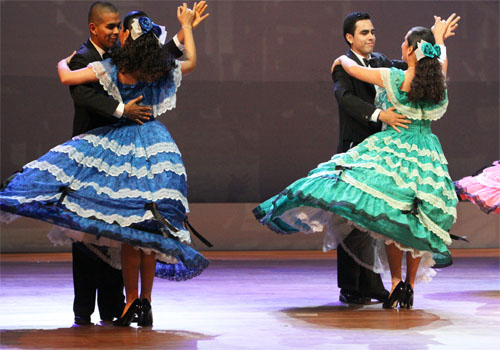
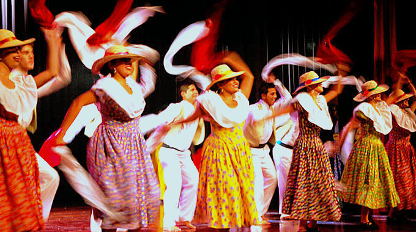
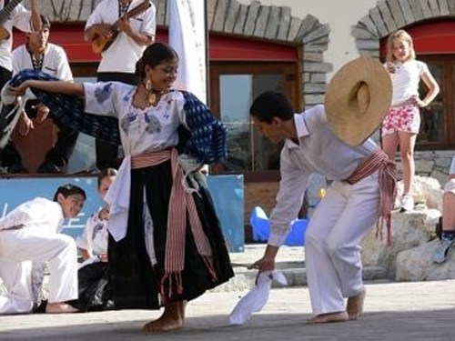
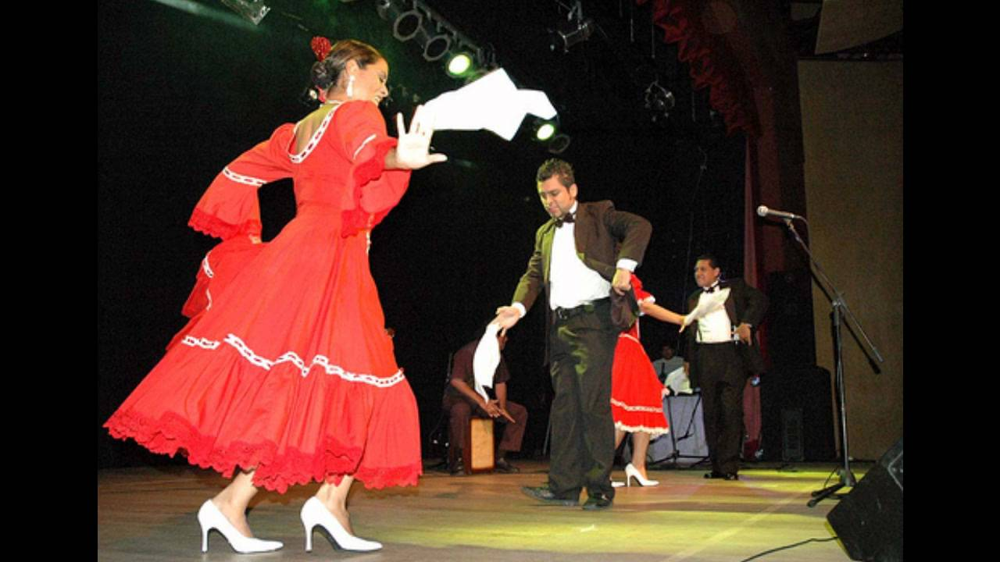
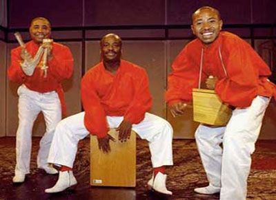

| HISTORIA | MÚSICOS | GENEROS | INSTRUMENTOS | CANCIONES |
|  |
El vals criollo es una forma musical única caracterizada por tiempos de 3/4, originaria de la costa del Perú, es una variacion del vals europeo y recien se hizo conocida en los años 50. |
La Zamacueca representa la percucion del gallo a la gallina, el amor hacia las aves y las peleas de gallos; se originó en La Libertad y deriva de danzas europeas, africanas y andinas. |
 |
|  |
El Tondero deriva de la musica gitana y española, este es confundido con la marinera, pero lo que lo diferencia es que tiene un repetitivo tundete de guitarra relacionado con la música de trompeta de banda gitana . |
La polca criolla tiene un origen procedente de europa, se origina en el siglo XIX es muy similar al vals, pero este tiene 4/4 y un ritmo mas rapido; su estilo es de una expresion alegre. |
 |
|  |
La música afroperuana se originó en el periodo colonial; incluye el festejo, landó, socabón, pregón y alcatraz. Tiene una mezcla de instrumentos españoles e indios. |

|
Dante Apaza |

|
estudiante4687@sjbdelasalle.edu.pe |